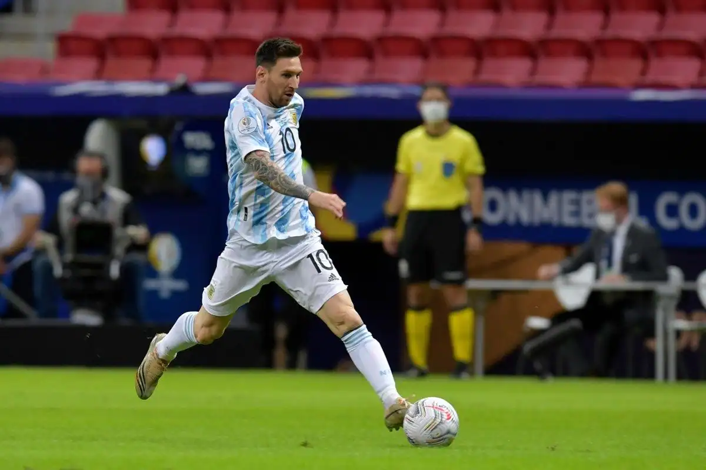
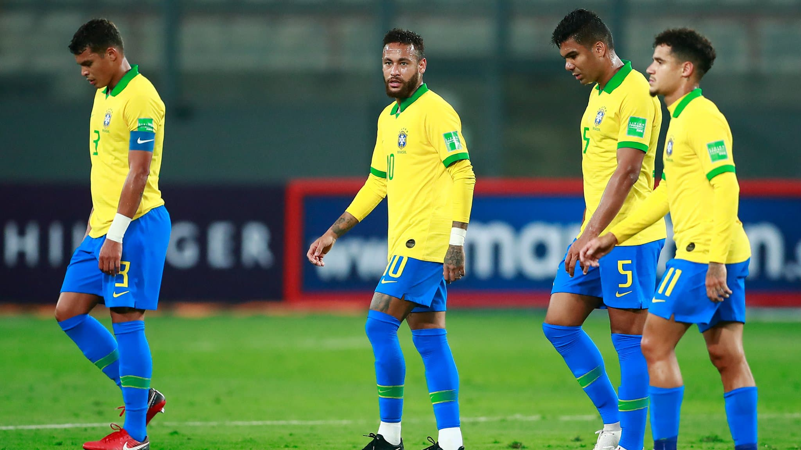
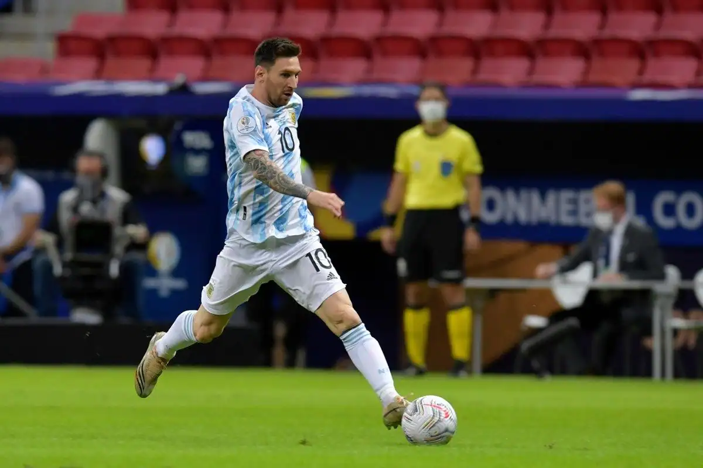
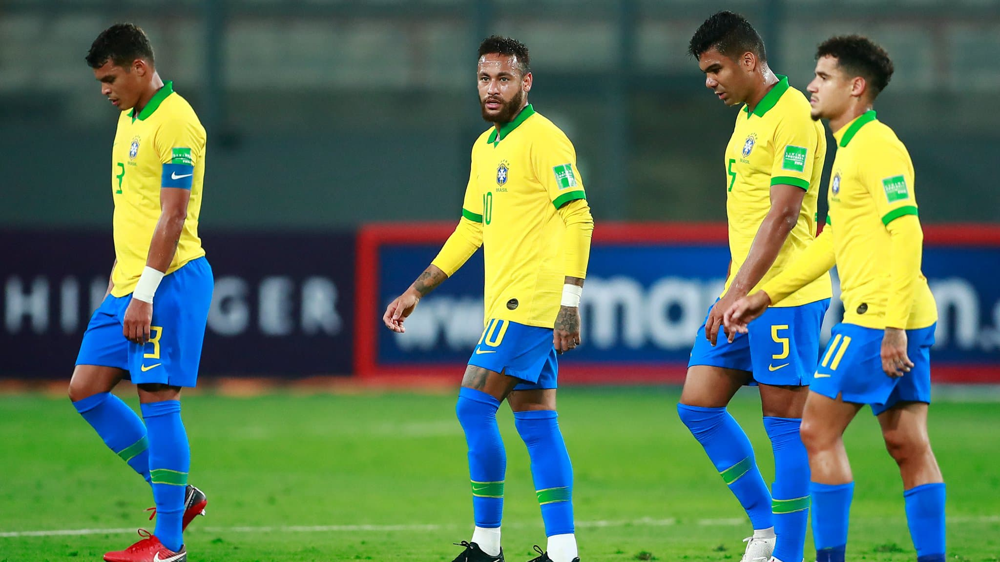

Neymar Jr
Neymar da Silva Santos Júnior, known as Neymar, is a Brazilian professional footballer who plays as a forward for Ligue 1 club Paris Saint-Germain and the Brazil national team. He is widely regarded as one of the best players in the world

Neymar da Silva Santos Júnior, known as Neymar, is a Brazilian professional footballer who plays as a forward for Ligue 1 club Paris Saint-Germain and the Brazil national team. He is widely regarded as one of the best players in the world

Lionel Andrés Messi is an Argentine professional footballer who plays as a forward and captains the Argentina national team. He is currently a free agent, having played all his professional career for La Liga club Barcelona, whom he captained from 2018 to 2021.

Cristiano Ronaldo dos Santos Aveiro GOIH ComM is a Portuguese professional footballer who plays as a forward for Serie A club Juventus and captains the Portugal national team.

Paulo Exequiel Dybala is an Argentine professional footballer who plays as a forward for Serie A club Juventus and the Argentina national team. Lionel Scaloni has referred to injury and fitness worries as the explanations behind not picking Juventus star Paulo Dybala in the international squad for the forthcoming World.

Mesut Özil is a German professional footballer who plays as an attacking midfielder for Süper Lig club Fenerbahçe. Nicknamed "The Assist King", Özil is known for his technical skills, creativity, agility, and finesse. He has also played as a wide midfielder in his career.

Mauro Emanuel Icardi is an Argentine professional footballer who plays as a striker for Ligue 1 club Paris Saint-Germain and the Argentina national team. On 26 September 2012, he made his Serie A debut for Sampdoria against Roma, substituting the Paraguayan midfielder Marcelo Estigarribia in the 49th minute.

Ángel Fabián Di María is an Argentine professional footballer who plays for Ligue 1 club Paris Saint-Germain and the Argentina national team. He can play as either a winger or an attacking midfielder. Ángel Fabián Di María (born 14 February 1988) is an Argentine professional footballer who plays for Ligue 1 club Paris Saint-Germain and the Argentina national team. He can play as either a winger or an attacking midfielder.

Kylian Mbappé Lottin is a French professional footballer who plays as a forward for Ligue 1 club Paris Saint-Germain and the France national team. Mbappé began his senior career with Ligue 1 club Monaco, making his professional debut in 2015, aged 16. Kylian Mbappé Lottin (born 20 December 1998) is a French professional footballer who plays as a forward for Ligue 1 club Paris Saint-Germain and the France national team.

Mohamed Salah Hamed Mahrous Ghaly is an Egyptian professional footballer who plays as a forward for Premier League club Liverpool and captains the Egypt national team. Considered one of the best players in the world, he is known for his finishing, dribbling, and speed.

Harry Edward Kane MBE is an English professional footballer who plays as a striker for Premier League club Tottenham Hotspur and captains the England national team. Regarded as one of the best strikers in the world, Kane is known for his prolific goalscoring record and ability to link play.

Kevin De Bruyne is a Belgian professional footballer who plays as a midfielder for Premier League club Manchester City, where he is vice-captain, and the Belgium national team. Kevin De Bruyne was born on the 28th of June 1991, by Herwig De Bruyne (father) and Anna De Bruyne (mother). He was born a White Caucasian which forms a minority of Belgium's white ethnicity. He was a special child, one destined to be great upon his birth.

Philippe Coutinho Correia is a Brazilian professional footballer who plays as an attacking midfielder or winger for Spanish club Barcelona and the Brazil national team. He is known for his combination of vision, passing, dribbling, and ability to conjure curving long-range strikes.
The Technical Study Group (GET) of CONMEBOL have confirmed their team of the CONMEBOL Copa América 2021 which came to a close on Saturday with the dramatic final between Argentina and Brazil.The chosen 11 includes 4 Argentine players, 3 Brazilians, 1 Colombia, 1 Peruvian, 1 Ecuadorian and 1 Chilean.They are: Emiliano Martínez; Mauricio Isla, Cristian Romero, Marquinhos.

 


